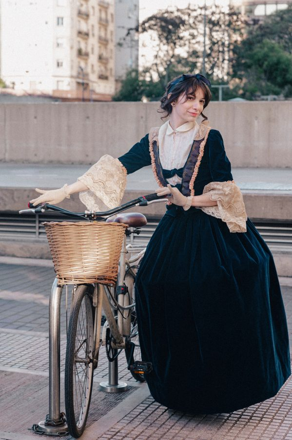
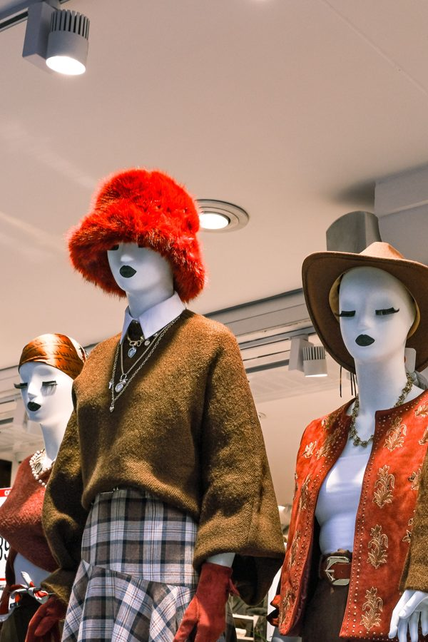
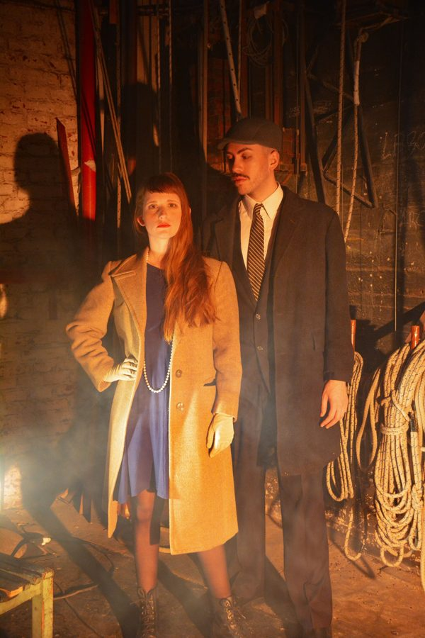
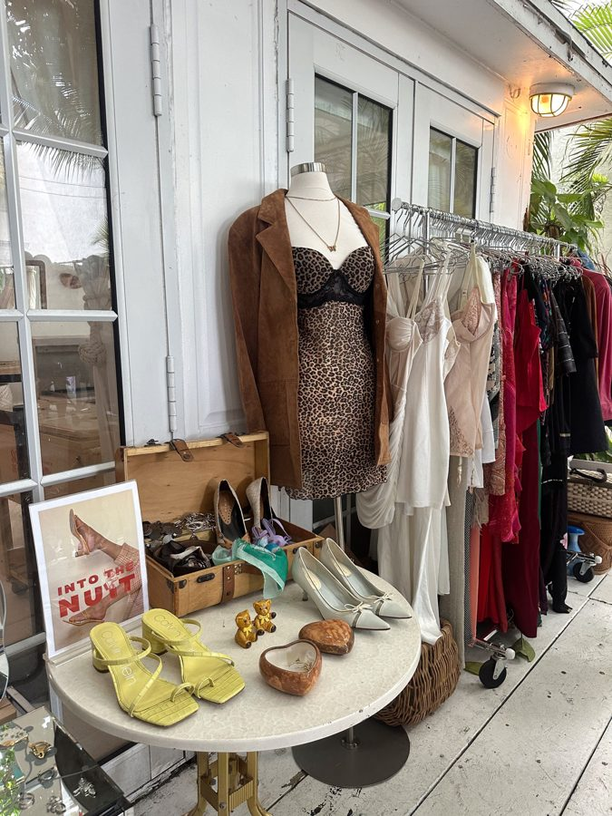

The Charm of Vintage Clothing
Vintage fashion allows people to explore clothing styles from earlier decades. Classic dresses, denim jackets, leather shoes and patterned shirts are examples of styles that continue to inspire modern fashion (Wikipedia, n.d.c).
Fashion changes, but personal style can last for years.



Popular Vintage Fashion Styles
- 1950s: full skirts and elegant dresses
- 1970s: flared trousers and colourful patterns
- 1990s: denim jackets and relaxed clothing
| Decade | Look | Typical pieces |
|---|---|---|
| 1950s | Dresses | Full skirts and elegant, fitted dresses |
| Everyday | Smart shirts and tailored trousers | |
| 1970s | Trousers | Flared trousers |
| Patterns | Colourful prints and bold patterns | |
| 1990s | Outerwear | Denim jackets |
| Casual | Relaxed jeans and loose tops |
Why People Choose Vintage Clothing
- It offers unique designs.
- It can help reduce clothing waste when items are reused.
- It allows people to express their individuality.

Explore more ideas on vintage clothing.
Markets and second-hand stalls are a popular place to look for unusual jackets, shoes and accessories.
Vintage style has its own character and history.